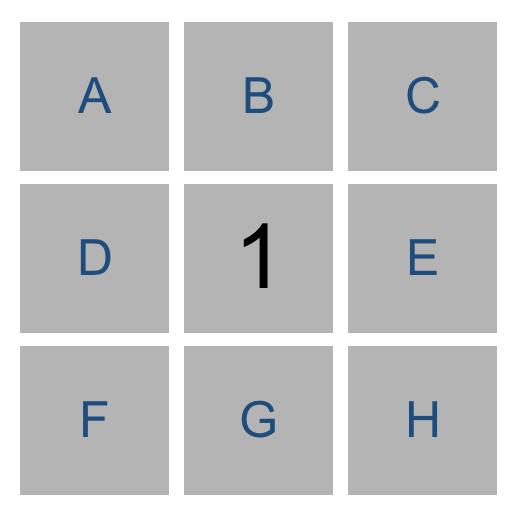
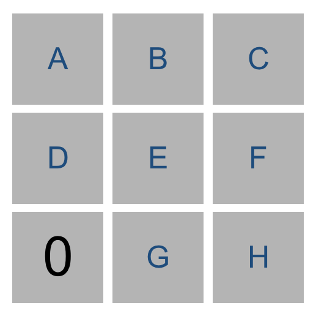
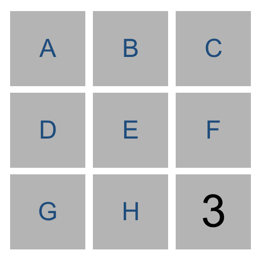

Тральщик
Напишите ИИ для игры Тральщик.
Опсание
Тральщик - головоломка, которая состоит из решётки ячеек, некоторые из них содержат скрытые мины. Кликанье ячейки, содержащей мину, приводит к детонации мины, и игрок проигрывает. Кликанье на безопасную ячейку (т.е. не содержащую мину) открывает число - сколько рядом ячеек с минами, касающихся данной.
В 3x3 Тральщике, например, три 1 значения показывают, что каждая их ячейка содержит одну мину в соседней ячейке. Четыре 0 значения показывают, что рядом мин нет.

Имея эту информацию, игрок может заключить, что мина в правом нижнем углу и нет мины в левом верхнем.
Цель игры поставить флажки (т.е. идентифицировать) на ячейки с минами. Флажок можно поставить, клинкув правой клавишей мыши на ячейку.
Пропозициональная логика
Ваша цель построить ИИ, который может играть в Тральщика. Напомним, что агент использующий знания, использует базу знаний.
Мы можем представить каждую ячейку как пропозициональный символ, который имеет значение $True$, если мина в ячейке, и $False$, если её там нет.
Рассмотрим следующую доску, где средняя ячейка была кликнута и соседние ячейки отмечены буквами для удобства обсуждения.
Мы видим, что одна из восьми ячеек заминирована. То что хотя бы одна из них заминирована мы можем выразить:
Или(A, B, C, D, E, F, G, H)
То что точно одна заминирована, мы можем выразить:
Или(
И(A, Не(B), Не(C), Не(D), Не(E), Не(F), Не(G), Не(H))
И(Не(A), B, Не(C), Не(D), Не(E), Не(F), Не(G), Не(H))
И(Не(A), Не(B), C, Не(D), Не(E), Не(F), Не(G), Не(H))
И(Не(A), Не(B), Не(C), D, Не(E), Не(F), Не(G), Не(H))
И(Не(A), Не(B), Не(C), Не(D), E, Не(F), Не(G), Не(H))
И(Не(A), Не(B), Не(C), Не(D), Не(E), F, Не(G), Не(H))
И(Не(A), Не(B), Не(C), Не(D), Не(E), Не(F), G, Не(H))
И(Не(A), Не(B), Не(C), Не(D), Не(E), Не(F), Не(G), H)
)
Это довольно длинное высакзывание, если мина не одна,
то высказывание будет ещё более сложным.
Для поля 8x8 нам понадобится 2^64 пропозициональных символа. Метод проверки моделей в этом случае становится мало привлекательным.
Представление знаний
Рассмотрим другой способ представления высказываний:
{A, B, C, D, E, F, G, H}
Каждое логическое предложение в этом представлении
имеет две части: множество ячеек входящих в высказывание
и число количество, представляет сколько из этих
ячеек, заминировано. Предложение выше обозначает, что из
ячеек A, B, C, D, E, F, G, H одна заминирована.
Рассмотрим игру ниже.
Для левого нижнего угла мы можем записать
{D, E, G}=0, запись означает, что
эти три ячейки не содержат мин.
Аналогично, рассмотрим следующую игру.
Наш ИИ будет строить предложение {E, F, G} = 3.
Мы можем заключить, что все три ячейки заминированы.
Всегда когда, количество мин равно
количеству ячеек,
мы знаем, что все ячейки высказывания заминированы.
Мы хотим, чтобы наши высказывания были только об ячейках, про которые нам не известно, безопасны они или нет. Это означает, что как только мы узнали есть мини в ячейке или нет, мы можем изменить наши высказывания, чтобы упростить их для вывода новых заключений.
Например, если наш ИИ знает предлодение {A, B, C} = 2,
Мы не имеем достаточно информации, чтобы что то заключить.
Но если, нам сказали что C безопасна, мы можем
удалить её из предложения, получив предлождение {A, B} = 2.
Также если ИИ знает предложение {A, B, C} = 2,
и сообщили, что C заминировано, то можно
удалить его из предложения, получив {A, B} = 1.
Рассмотрим следующий тип вывода.

Для средней верхней ячейки можно записать {A, B, C} = 1.
Для средней нижней -- {A, B, C, D, E} = 2.
Следовательно, мы можем заключить, что {D, E} = 1.
Так как A, B, C, D, E содержат две мины, а A, B, C содержат
одну мину, то оставшаяся мина в ячейках D, E.
Если мы имеем высказывания множество1 = колличество1
и множество2 = колличесвто2 где множедство1 подмножество
множества2, то можно построить новое высказывание множество2 - множество1 = колличество2 - колличесвто1.
Таким методом мы можем представить и написать ИИ агента, который будет собирать знания о состоянии игры и выбирать ячейки безопасные.
Начало
- Загрузите дистрибутив, разархивируйте.
- В директории проекта выполните команду
pip3 install -r requirements.txt, чтобы установитьpygame.
Содержание архива
minesweeper.py содержит логику игры и ИИ. runner.py был
реализован для вас, он содержит код графического интерфейса
игры. Когда вы дополните определения функций в minesweeper.py,
вы сможете выполнить python3 runner.py, для игры
в Тральщика (или дать ИИ поиграть).